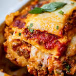

My Sweet Home
Odin Recipes

Description
This lasagna recipe is a classic comfort food, perfect for a family dinner. It's made with layers of pasta, ricotta cheese, meat sauce, and mozzarella cheese.
It's a bit time-consuming to make, but well worth the effort!
Ingredients
- 1 pound sweet Italian sausage
- ¾ pound ground beef
S
- ½ cup minced onion
- 2 cloves garlic, crushed
- 1 (28 ounce) can crushed tomatoes
- 2 (6 ounce) cans tomato paste
- 1 (15 ounce) container ricotta cheese
- ½ cup grated Parmesan cheese
- 1 egg
- Lasagna noodles
- Mozzarella cheese, sliced
Steps
- In a Dutch oven, cook sausage, ground beef, onion, and garlic over medium heat until well browned.
- Stir in crushed tomatoes, tomato paste, tomato sauce, and sugar. Season with basil, fennel seeds, Italian seasoning, salt, pepper, and oregano. Simmer, covered, for about 1 1/2 hours, stirring occasionally.
- In a mixing bowl, combine ricotta cheese, egg, and Parmesan cheese.